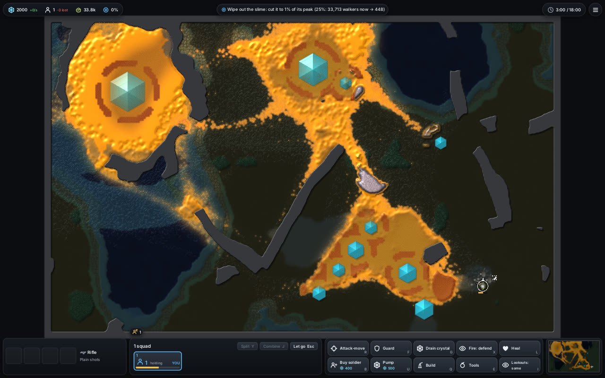

<title>Trunk Fort</title>
<meta name="claude:viewport-fit-sides" content="cover">
<link rel="stylesheet" href="https://fonts.googleapis.com/css2?family=Inter:wght@400;500;600&family=Space+Grotesk:wght@500;600&display=swap">
<style>
/* Layout: one reading column; each film sits beside or above the counts that
   were read off the same game, so no picture stands without its numbers. */
:root {
  --bg: #f3f4f1;
  --panel: #ffffff;
  --ink: #1b2023;
  --muted: #58626a;
  --rule: #d4d8d6;
  --amber: #a85a12;
  --amber-soft: #f4e3cf;
  --off: #5b6f86;
  --off-soft: #e3e9f0;
  --display: "Space Grotesk", "Segoe UI", system-ui, sans-serif;
  --body: Inter, "Segoe UI", system-ui, sans-serif;
}
@media (prefers-color-scheme: dark) {
  :root:not([data-theme="light"]) {
    --bg: #14181b; --panel: #1c2226; --ink: #e7eae8; --muted: #9aa5ab; --rule: #313a40;
    --amber: #e8a04d; --amber-soft: #3a2b1a; --off: #9bb3cf; --off-soft: #232e3a;
    color-scheme: dark;
  }
}
:root[data-theme="dark"] {
  --bg: #14181b; --panel: #1c2226; --ink: #e7eae8; --muted: #9aa5ab; --rule: #313a40;
  --amber: #e8a04d; --amber-soft: #3a2b1a; --off: #9bb3cf; --off-soft: #232e3a;
  color-scheme: dark;
}
body {
  background: var(--bg); color: var(--ink);
  font: 400 16px/1.55 var(--body);
  padding-block: 40px 72px;
  padding-left: max(16px, env(safe-area-inset-left, 0px));
  padding-right: max(16px, env(safe-area-inset-right, 0px));
}
main { max-width: 1040px; margin: 0 auto; display: flex; flex-direction: column; gap: 56px; }
header { display: flex; flex-direction: column; gap: 14px; }
h1 { font: 600 2.1rem/1.15 var(--display); margin: 0; text-wrap: balance; letter-spacing: -0.01em; }
h2 { font: 600 1.4rem/1.25 var(--display); margin: 0; text-wrap: balance; }
h3 { font: 600 0.82rem/1.3 var(--body); margin: 0; text-transform: uppercase; letter-spacing: 0.07em; color: var(--muted); }
p { margin: 0; max-width: 68ch; }
.lede { font-size: 1.1rem; }
.meta { color: var(--muted); font-size: 0.9rem; }
blockquote { margin: 0; padding: 2px 0 2px 16px; border-left: 3px solid var(--rule); color: var(--muted); max-width: 68ch; }
section { display: flex; flex-direction: column; gap: 20px; }
.pair { display: grid; grid-template-columns: repeat(2, minmax(0, 1fr)); gap: 20px; }
.wide { display: grid; grid-template-columns: minmax(0, 3fr) minmax(0, 2fr); gap: 24px; align-items: start; }
@media (max-width: 760px) { .pair, .wide { grid-template-columns: minmax(0, 1fr); } }
figure { margin: 0; display: flex; flex-direction: column; gap: 10px; min-width: 0; }
figure video, figure img { width: 100%; height: auto; display: block; border-radius: 4px; background: #0d1012; }
figcaption { font-size: 0.9rem; color: var(--muted); }
figcaption b { color: var(--ink); font-weight: 600; }
.counts { min-width: 0; display: flex; flex-direction: column; gap: 10px; }
.scroll { overflow-x: auto; }
table { border-collapse: collapse; width: 100%; font-size: 0.9rem; font-variant-numeric: tabular-nums; }
th, td { text-align: right; padding: 6px 10px; border-bottom: 1px solid var(--rule); white-space: nowrap; }
th:first-child, td:first-child { text-align: left; }
thead th { font-weight: 600; color: var(--muted); font-size: 0.8rem; border-bottom-color: var(--muted); }
.tag { display: inline-block; padding: 1px 8px; border-radius: 3px; font-size: 0.78rem; font-weight: 600; white-space: nowrap; }
.tag.on { background: var(--amber-soft); color: var(--amber); }
.tag.off { background: var(--off-soft); color: var(--off); }
code { font: 0.86em ui-monospace, "SF Mono", Menlo, Consolas, monospace; }
.see { border-left: 3px solid var(--amber); padding-left: 16px; display: flex; flex-direction: column; gap: 8px; }
.see p { max-width: 72ch; }
ul { margin: 0; padding-left: 20px; display: flex; flex-direction: column; gap: 6px; max-width: 70ch; }
</style>

<main>
<header>
  <h1>The Trunk now walls the crystals it holds</h1>
  <blockquote>"I thought the walls would form protecting the core of the slime or the slime crystals giving them a base of sorts"</blockquote>
  <p class="lede">That is built. On planet 3 an amber ring with four gates stands round the slime's home crystal a quarter of a minute into the game, and round each crystal it takes after. It still hardens where you shoot it, so you can play both.</p>
  <p class="meta">2026-11-18, the Enemy lane. Planet 3 of run seed 1 on the software GPU, one film each, so every number is a first number. It is on in the game: land on planet 3 and look at the slime's big crystal.</p>
</header>

<section>
  <h2>What it will do</h2>
  <div class="see">
    <p><b>A ring with four gates round every crystal it holds.</b> The slime holds a crystal once it covers a quarter of it. The ring sets 10 to 15 seconds later, when the ground under it has crusted.</p>
    <p><b>The walls stop your soldiers and take three hits a walker.</b> The gates are open ground: the slime comes and goes by them, its charges and raids now route through them, and so can a squad.</p>
    <p><b>Fire takes one stretch at a time.</b> A wall burns, but the fed slime standing in a gate does not, so a fire on the wall burns out between two gates. Outside the ring it runs on over crusted ground.</p>
    <p><b>A crystal it loses or drains dry loses its walls.</b> A raid on a crystal you are draining builds no ring there.</p>
  </div>
</section>

<section>
  <h2>The home ring setting</h2>
  <div class="wide">
    <figure>
      <video src="home-zoom6.mp4" autoplay muted loop playsinline controls></video>
      <figcaption><b>Zoom 6, 0:02 to 0:32, three times real speed.</b> The slime's home crystal, top left of the map. Nobody is shooting: the darker amber is slime that has set.</figcaption>
    </figure>
    <div class="counts">
      <h3>The same game, by the clock</h3>
      <div class="scroll"><table>
        <thead><tr><th>Time</th><th>Walkers set</th><th>Wall cells</th><th>Slime alive</th></tr></thead>
        <tbody>
          <tr><td>0:10</td><td>0</td><td>0</td><td>43,409</td></tr>
          <tr><td>0:15</td><td>1,422</td><td>1,371</td><td>43,436</td></tr>
          <tr><td>0:20</td><td>1,556</td><td>1,508</td><td>43,444</td></tr>
          <tr><td>0:30</td><td>1,608</td><td>1,551</td><td>43,506</td></tr>
          <tr><td>0:40</td><td>1,672</td><td>1,610</td><td>43,646</td></tr>
        </tbody>
      </table></div>
      <p class="meta">A wall cell is ground a soldier cannot stand on. The ring is 3 cells out from the crystal's edge and 3 thick, and each gate is 4 wide, in the cells the squad's ranges are counted in.</p>
    </div>
  </div>
</section>

<section>
  <h2>Up close</h2>
  <div class="wide">
    <figure>
      <video src="gate-zoom12.mp4" autoplay muted loop playsinline controls></video>
      <figcaption><b>Zoom 12, 0:08 to 0:28, twice real speed.</b> The home ring setting, with its four gates. The slime in the gaps stays live and keeps moving.</figcaption>
    </figure>
    <div class="counts">
      <h3>Why gates</h3>
      <p>A closed ring would shut the slime's own body out of its crystal, and shut a squad out of that crystal for good. With gates the tube keeps running, and the way in for you is the way out for it.</p>
      <p class="meta">The home ring's first gate faces the middle of the map and every other ring's faces home. A ring whose gates would open on rock is turned until two open on ground.</p>
    </div>
  </div>
</section>

<section>
  <h2>The whole map, three minutes in</h2>
  <div class="wide">
    <figure>
      
      <figcaption><b>3:00, the squad standing where it landed.</b> Home is top left. The second big crystal has its ring, and the crystals at the bottom, close together, share one outline.</figcaption>
    </figure>
    <div class="counts">
      <h3>With the fort and without, squad standing still</h3>
      <div class="scroll"><table>
        <thead><tr><th></th><th>1:00</th><th>2:00</th><th>3:00</th></tr></thead>
        <tbody>
          <tr><td><span class="tag on">Fort</span> walkers set</td><td>1,895</td><td>2,806</td><td>3,916</td></tr>
          <tr><td><span class="tag on">Fort</span> wall cells</td><td>1,829</td><td>2,708</td><td>3,681</td></tr>
          <tr><td><span class="tag on">Fort</span> slime alive</td><td>44,191</td><td>29,863</td><td>33,801</td></tr>
          <tr><td><span class="tag off">No fort</span> walkers set</td><td>0</td><td>452</td><td>1,321</td></tr>
          <tr><td><span class="tag off">No fort</span> wall cells</td><td>0</td><td>449</td><td>1,339</td></tr>
          <tr><td><span class="tag off">No fort</span> slime alive</td><td>44,738</td><td>31,541</td><td>37,314</td></tr>
        </tbody>
      </table></div>
      <p class="meta">With no fort the slime sets only where the squad's shots hurt it. In both games the raid reaches the standing squad and one soldier of four is left at 3:00. The walled slime is 9% smaller at 3:00: a set walker does not feed.</p>
    </div>
  </div>
  <div class="wide">
    <figure>
      <video src="south-zoom6.mp4" autoplay muted loop playsinline controls></video>
      <figcaption><b>Zoom 6, 1:00 to 3:00, six times real speed.</b> The crystals beside the landing site, with the squad holding on the right. The slime arrives by 1:40 and has walled the crystals by 2:20, the rings of crystals close together sharing one outline. The darker patch by the squad is slime its shots set.</figcaption>
    </figure>
    <div class="counts">
      <h3>A scripted rush, with the fort and without</h3>
      <div class="scroll"><table>
        <thead><tr><th></th><th>1:00</th><th>2:00</th></tr></thead>
        <tbody>
          <tr><td><span class="tag on">Fort</span> soldiers</td><td>12</td><td>6</td></tr>
          <tr><td><span class="tag on">Fort</span> walkers killed</td><td>3,734</td><td>4,938</td></tr>
          <tr><td><span class="tag on">Fort</span> slime alive</td><td>40,147</td><td>19,362</td></tr>
          <tr><td><span class="tag off">No fort</span> soldiers</td><td>12</td><td>0</td></tr>
          <tr><td><span class="tag off">No fort</span> walkers killed</td><td>3,611</td><td>4,712</td></tr>
          <tr><td><span class="tag off">No fort</span> slime alive</td><td>40,362</td><td>20,062</td></tr>
        </tbody>
      </table></div>
      <p class="meta">A different game from the clip: a script that drains and buys soldiers as fast as it can. It reaches the second crystal before that ring has set, so the fort does not slow it in the first minute. Six soldiers against none at 2:00 is how one raid fell on one seed.</p>
    </div>
  </div>
</section>

<section>
  <h2>Fire on the wall</h2>
  <div class="wide">
    <figure>
      <video src="fire-zoom6.mp4" autoplay muted loop playsinline controls></video>
      <figcaption><b>Zoom 6, 0:58 to 2:10, four times real speed.</b> A fire lit at 1:00 on the home ring's south stretch. That stretch burns out between its two gates, and the other three stand. The fire then runs on over the crusted ground outside.</figcaption>
    </figure>
    <div class="counts">
      <h3>The same game, by the clock</h3>
      <div class="scroll"><table>
        <thead><tr><th>Time</th><th>Burning</th><th>Wall cells</th><th>Killed</th><th>Slime alive</th></tr></thead>
        <tbody>
          <tr><td>0:58</td><td>0</td><td>1,823</td><td>69</td><td>44,128</td></tr>
          <tr><td>1:10</td><td>123</td><td>1,660</td><td>1,481</td><td>43,994</td></tr>
          <tr><td>1:20</td><td>171</td><td>1,673</td><td>4,778</td><td>42,648</td></tr>
          <tr><td>1:30</td><td>126</td><td>1,673</td><td>8,808</td><td>28,276</td></tr>
          <tr><td>2:00</td><td>61</td><td>2,452</td><td>12,149</td><td>25,855</td></tr>
          <tr><td>2:00, no fire</td><td>0</td><td>2,708</td><td>1,888</td><td>29,863</td></tr>
        </tbody>
      </table></div>
      <p class="meta">The fed slime standing in a gate does not burn, so a fire does not run round the ring. The burnt stretch had not set again by 2:10. Slime near a fire is alarmed and sets where it stands, so the wall cells come back, mostly away from the ring.</p>
    </div>
  </div>
</section>

<section>
  <h2>What I chose, and what is still open</h2>
  <ul>
    <li><b>Rings round every crystal it holds</b>, with the home crystal as the keep. The slime has had no core body since the no-king ruling, so its first crystal is its core.</li>
    <li><b>Three cells thick.</b> At two the ring was a line one or two walkers deep.</li>
    <li><b>Hardening where shot stays on</b>, as I said it would. By 2:00 of a fight most of the set slime on the map is still the kind your shots make.</li>
    <li><b>The look is not done.</b> Set slime is a flat darker slab. That was a detail when it formed only under fire, and it is now a standing part of planet 3, so Look and interface reviews these clips.</li>
    <li><b>Not checked:</b> a squad fighting its way through a ring by hand, whether a wall chewed by shots fills in again, and the cost on your GTX 1070, which goes in the milestone's timing batch.</li>
  </ul>
</section>
</main>
